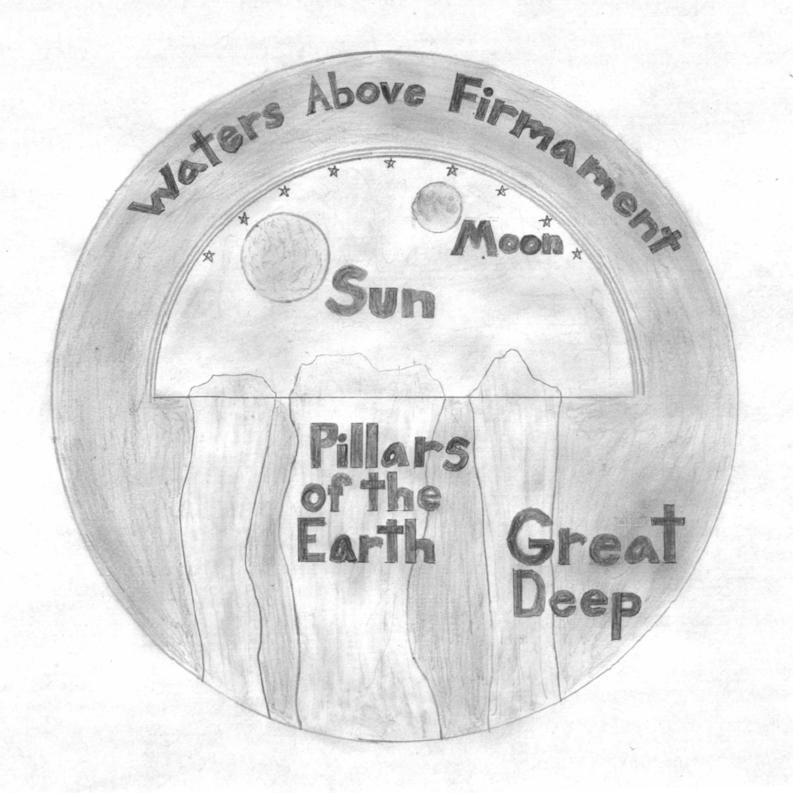

Models Aren't Reality
More Than Simply True or False
In a prior article, we explored the importance of considering whether any presented view is true when evaluating multiple options. Assuming that at least one presented view must be true can lead to a false conclusion. Nonetheless, recognizing that options might be contraries rather than contradictories may still yield an oversimplified truth-seeking approach in some cases. When dealing with models of reality, binary true/false categorization is not all that must be considered.
Propositions and Models
Let us begin by distinguishing between propositions and models:
- A proposition is a singular statement about something that can either be true or false.
- A model is a collection of propositions that together describe some system.
Statements such as "The sun is larger than the Earth." or "Mars travels around the Earth." are propositions. They are simple statements that are either true or false. Geocentrism and Heliocentrism are models. They consist of a finite number of propositions that together are meant to explain and predict the positions of the Earth, planets, Sun, and stars relative to each other.
Gradation of Truth
Let us revisit two models discussed in the
To illustrate, let us introduce another model: the Ancient Near Eastern Model. The Earth is flat and the firmament is a solid dome. If we compare this to the Geocentric Model, we see them both as "false." Nevertheless, even on an intuitive level, something is clearly "more false" about the Ancient Near Eastern Model.

Ptolemaic Geocentrism can actually be quite a useful and predictive model. It gets the shape of the Earth right, which accounts for different time zones and the ability to sail around the world. With epicycles, the movement of the planets in the sky over time can be accounted for and predicted with tremendous precision. It can also be used to forecast both lunar and solar eclipses. The model was clearly useful and effective to a greater degree than the Ancient Near Eastern Model.1
From this, we might infer that, when evaluating models, there is a concept of "degrees of wrongness." We might infer that there are degrees of wrongness all the way up until we find a true model. We might see a continuum of truer and truer models all the way up to the true/accurate model, which would be Heliocentrism in this case. However, there is a problem with this. Copernican Heliocentrism does lie on the continuum of wrongness. It assumed that the planets and Earth had perfectly circular orbits around the Sun, which is wrong and offsets predictions. We might then say that Kepler's variant of the Heliocentric Model, which introduced elliptical orbits, is the true model. However, that system was still missing some planets and other interplanetary objects. It also doesn't account for the Sun's wobble due to the pull of planets. Perhaps we need to fast-forward all the way to the present day? Then we will have the true model that lies at the end of the continuum.
Alas, even our most modern models have some faults. We don't have perfect measurements of the distances between all the planets. There are interplanetary objects we don't know about. Even if we someday track every large object, we could never account for every tiny piece of space dust and the minute effect it has. Every atom of every object has a tiny gravitational effect. We can't map every atom in the solar system, and even if we did, we could then start talking about the subatomic particles. No matter how much detail we add to our model, there is always something beyond the horizon: something more that could be included. We can increase our model's granularity towards infinity, but we can never reach it. It appears the model can never truly be complete. Perhaps the continuum of wrongness doesn't terminate when it reaches a true model? Perhaps there is no true model at the end, only less and less wrong ones.
Can a Model Even Be Correct?
There is something very sly in those last two paragraphs: some logical sleight of hand. There is a subtle equivocation that may cause us to draw some unjustified conclusions. Let us remind ourselves that models are collections of individual propositions, and these propositions can be true or false. Above we talked about how a model can be wrong because it contains false propositions (e.g. the Earth is at the center of the solar system). We also discussed how a model can leave out a true proposition (e.g. not including the existence/positions of a particular asteroid). The first are errors of commission and the second are errors of omission. However, are the omissions truly errors?
We have established that we can never push the granularity of a model to infinity. There will always be detail (propositions) that could be included but are not. However, nothing is forcing us to claim that our models are an exhaustive list of all propositions that are true about a system. We can construct a model that is a finite list of propositions that are all true. If we have a Heliocentric Model that claims that the Sun sits perfectly at the center of the solar system and the planets orbit in perfect circles, the model contains false propositions. However, if we have a Heliocentric Model that says that the Sun remains near the center of the solar system and the planets orbit it (not specifying the shape of the orbits), the model contains only true propositions. Thus, we have constructed a model that is fully true, though it is not exhaustive.
Now we know that a model must have a limited number of propositions, and for a model to be true, all of the propositions must be true. However, nothing dictates how many propositions to include. We could create a model of cosmology with zero propositions. This would be a true model, since everything that it does say is true because there are no propositions that could be false. However, although it is true, this model has no utility because it tells us nothing. We can eliminate potential errors by including fewer propositions or by making the propositions vaguer, but this also reduces the amount of information the model provides us with. We trade detail for certainty. As we begin adding more and more propositions to the model, it becomes more and more descriptive and potentially useful. It also becomes more complicated, with more and more places for errors to hide. The important thing, however, is that models can never drill all the way down to base-reality. They are only descriptions and abstractions. No model will ever contain all true propositions about any real system it describes. It is a simplified picture of a thing, not the thing itself. It is not reality; it is a true and useful abstraction at best.
What is the Purpose of Models?
A firm understanding of how models are composed and what makes them true or untrue has no value unless producing models has some purpose. What is the purpose of models? On the one hand, they are a way that we seek truth. We explore reality and attempt to understand it by modeling it. On the other hand, they also have practical utility. Our models of the solar system allow us to reach other planets, and our models of organic compounds allow us to produce medicines and treatments.
Truth and utility aren't always produced at the same time.2 In spite of some fundamental untruth, Geocentrism had utility. It was a very effective predictive tool. The Copernican model was truer, but wasn't more useful or predictive. Today, models such as the Higgs Field in particle physics are supported by strong evidence but don't have any practical use yet.
Although Geocentrism's central error wasn't intentional, sometimes false assumptions are included in models on purpose to simplify them. Ignoring air resistance or treating objects as point masses is not reflective of most real-world systems, but it does make the models easier to work with if perfect accuracy isn't needed. When the simplification is intentional, we have the luxury of determining how much error it introduces and making an informed decision about whether the simplification is acceptable. However, this also means that many working models simply cannot be classified as true in the strict sense.
This brings us to the value of models that lie on the continuum of wrongness. Finding models that have explanatory power, even if they are not fully correct, can be useful. They can not only provide utility (as Geocentrism did), but also act as stepping stones on the path to truer models. We may know or suspect false elements in our model due to inconsistencies and unexplained observations, but we continue to use it because we haven't been able to formulate a model that is better. Sometimes the best we have is the equivalent of a Geocentric Model—flawed but better than its predecessors. It may be imperfect, but seeking truth is a process. A model can yield benefit even when major errors are present.
Sometimes You Must Pick Your Poison
We don't always have the luxury of flawless models. This is particularly true of our models near the extremity of human knowledge. There are a lot of unknowns when exploring consciousness, epistemology, origins, etc. We want our model to explain everything, but a model with some practical utility and partial truth may be the best we have at times. Sometimes we have a few models that try to explain a system. Each has its own trade-offs: trade-offs between what it explains well, poorly, or not at all. We may try to determine which model corresponds better with observations, but it may be the case that one model explains some observed phenomena well and another model explains other observed phenomena well. Sometimes, when choosing a model, you have to pick your poison and decide what shortcoming to tolerate.
When we see multiple models with conflicting strengths and deficiencies, we might adopt multiple models. If we are thinking like an engineer and using models for their utility, different models may be useful for different purposes. For instance, as we work towards finding the explanation of quantum gravity, the main contenders are String Theory and Loop Quantum Gravity. Neither is proven, we don't know that they are mutually exclusive, and each seems more useful when thinking about particular classes of problems. We might switch between models frequently, using each where it appears most useful.
It may be necessary to entertain conflicting models in practice, gaining utility from each of their different advantages, disadvantages, and flaws. Perhaps adopting multiple conflicting models is not ideal, but practically, it may be a necessary evil at times in the quest for truth.
Conclusion
No model can be exhaustive. Models are abstractions in the mind that don't capture the infinite granularity of reality. Even with this concession, we would like models that are fully true in their non-exhaustive way. Nevertheless, we cannot always have such a model. We may even find ourselves using multiple conflicting models, knowing that they may all be flawed. Tolerating inconsistency feels like a cop-out, but the next article will deal with how inconsistency can be a valid truth-seeking strategy.
- There is even a sense in which we default to a Geocentric Model when doing simple reasoning today. When looking to the sky to determine how close the coming night is, we intuitively think about the Sun's passage across the sky, rising and setting. We don't think of this in terms of the ground tilting under us. This mental shortcut is good enough for much of our everyday thought.
- This is reminiscent of the "experiments of light" and "experiments of fruit" distinction made by Sir Francis Bacon in the Novum Organum.
| Published October 7, 2026 |
|---|